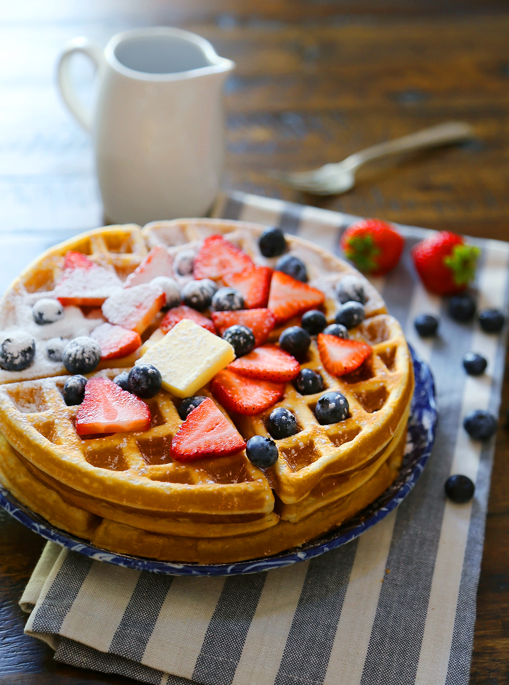

Go Back
Belgian Waffles
Full recipe can be found at here

Description
Belgian waffles are a variety of waffle with a lighter batter, larger squares, and deeper pockets than American waffles. Belgian waffles were originally leavened with yeast, but baking powder is now often used. They are often eaten as a breakfast food; toppings vary from whipped cream, confectioners sugar, soft fruit, and chocolate spread, to syrup and butter or margarine. They may also be served with vanilla ice cream and fresh fruit (such as strawberries) as a dessert.
Ingredients
- 1 ⅓ cups all-purpose flour
- ¾ teaspoon baking soda
- 2 teaspoons white sugar
- ¼ teaspoon salt
- 3 eggs
- 1 ½ teaspoons vanilla extract
- 1 ⅓ cups milk
- ⅓ cup melted butter
- 2 teaspoons baking powder
- ¼ cup butter
- ⅔ cup brown sugar
- 2 teaspoons rum flavored extract
- 2 teaspoons vanilla extract
- ½ teaspoon ground cinnamon
- ¼ cup whole pecans
- ½ cup pancake syrup (i.e. Mrs. Butterworth's®)
- 3 bananas, cut into 1/2 inch slices
- 1 cup heavy cream
- ¼ teaspoon vanilla extract
- 1 tablespoon confectioners' sugar
Directions
- Preheat a Belgium waffle iron. Whisk together the flour, baking soda, baking powder, white sugar, and salt in a bowl; set aside.
- Whisk together the eggs, 1 1/2 teaspoons vanilla extract, and milk in a bowl. Stir in the melted butter and flour mixture until a slightly lumpy batter forms. Cook the waffles in the preheated iron until steam stops coming out of the seam, about 2 minutes.
- Meanwhile, melt 1/4 cup of butter in a saucepan over medium heat. Stir in the brown sugar, rum extract, 2 teaspoons vanilla extract, and cinnamon. Bring to a simmer, the stir in the pecans and continue simmering for 1 minute. Stir in the pancake syrup and bananas, continue cooking until the bananas soften, about 4 minutes.
- Beat the heavy cream, 1/4 teaspoon of vanilla and confectioners' sugar with an electric mixer in a medium bowl until firm peaks form.
- Once waffles are done, spoon bananas Foster sauce over waffle and top with a dollop of whip cream.